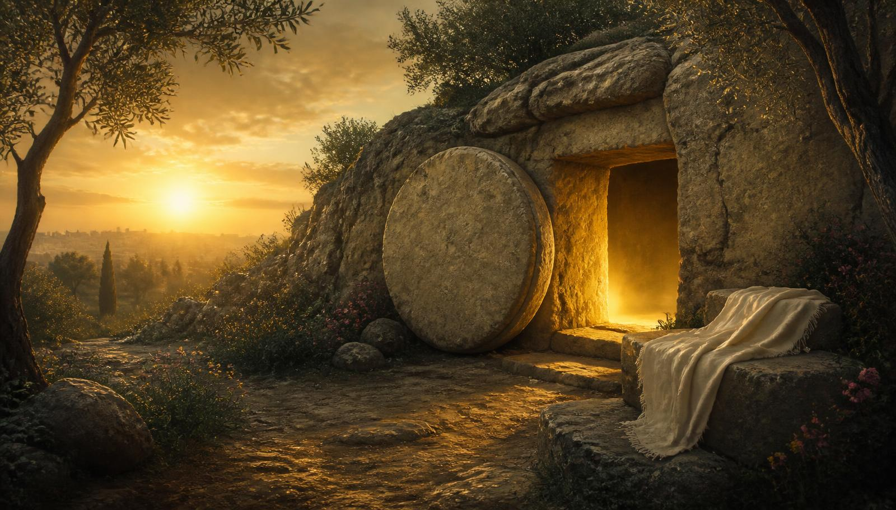
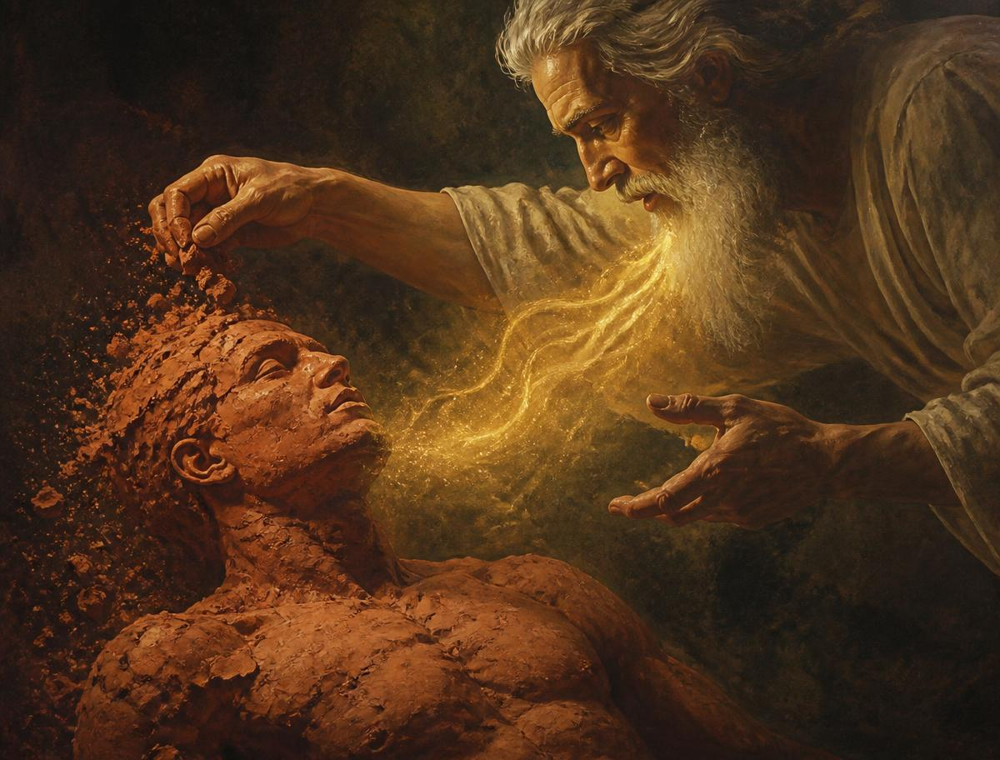
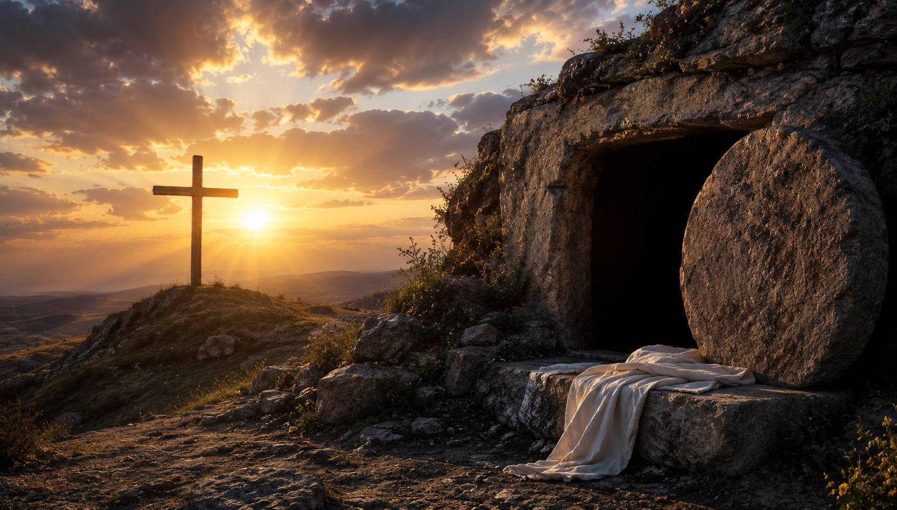

O que a Bíblia realmente ensina sobre o fim da vida — e sobre a manhã em que a morte perderá para sempre.
A Bíblia é direta ao apontar quem, no universo inteiro, tem vida em si mesmo, sem começo e sem fim: Deus. Paulo escreve a Timóteo que o "bem-aventurado e único Soberano" é "o único que possui imortalidade e habita em luz inacessível" (1 Timóteo 6:15-16). A palavra grega usada é athanasia — "sem morte".
Isso significa que nenhum ser humano nasce imortal. Nossa vida é emprestada, sustentada a cada segundo por Aquele que a deu. Jesus, sendo Deus, tem "vida em Si mesmo" (João 5:26); e o Espírito Santo é chamado de "Espírito eterno" (Hebreus 9:14). Os anjos e os salvos vivem porque Deus os sustenta — não por natureza própria.
Por isso a imortalidade é sempre apresentada como presente futuro, e não como posse atual: "é necessário que este corpo mortal se revista da imortalidade" (1 Coríntios 15:53). Se já a tivéssemos, não haveria nada a receber.

Gênesis 2:7 registra a fórmula mais importante da antropologia bíblica: "Formou o Senhor Deus ao homem do pó da terra e lhe soprou nas narinas o fôlego de vida, e o homem passou a ser alma vivente."
Repare: o texto não diz que o homem recebeu uma alma — diz que ele se tornou uma alma vivente (em hebraico, nefesh chayyah). A alma, na Bíblia, é a pessoa inteira e viva, não uma parte separável que sobreviveria ao corpo. Essa é uma das convicções mais claras da Igreja Adventista do Sétimo Dia: o ser humano é uma unidade indivisível.
Junto com a vida, Deus deu liberdade — e com a liberdade, uma advertência de amor: "De toda árvore do jardim comerás livremente, mas da árvore do conhecimento do bem e do mal não comerás; porque, no dia em que dela comeres, certamente morrerás" (Gênesis 2:16-17). O aviso não era uma ameaça arbitrária, mas a descrição de uma consequência: separar-se da Fonte da vida é deixar de viver.
| Elemento | Origem |
|---|---|
| Pó da terra | O corpo, a matéria |
| Fôlego de vida | A vida dada por Deus (ruach) |
| Alma vivente | O resultado: a pessoa viva |
Na morte o processo simplesmente se inverte: "o pó volte à terra... e o espírito volte a Deus, que o deu" (Eclesiastes 12:7). O que "volta a Deus" é o sopro/fôlego de vida, não uma consciência separada.
A serpente disse a Eva a primeira mentira registrada da história: "Certamente não morrereis" (Gênesis 3:4). Foi um ataque direto à palavra de Deus — e é a raiz de toda crença de que o ser humano continua consciente depois de morrer.
Eva "viu que a árvore era boa para se comer, agradável aos olhos e árvore desejável para dar entendimento; tomou-lhe, pois, do fruto e comeu" (Gênesis 3:6). Adão comeu com ela. O pecado quebrou a comunhão com a Fonte da vida, e Deus pronunciou a realidade: "no suor do rosto comerás o teu pão, até que tornes à terra, pois dela foste formado; porque tu és pó e ao pó tornarás" (Gênesis 3:19).
Deus não criou a morte: ela é a consequência inevitável da separação do pecado. Por misericórdia, Ele impediu o acesso à árvore da vida (Gênesis 3:22-24) — pois viver eternamente em estado de pecado seria a verdadeira tragédia.
A Bíblia usa mais de cinquenta vezes a figura do sono para descrever a morte. Jesus disse de Lázaro, morto havia quatro dias: "o nosso amigo adormeceu, mas vou para despertá-lo" (João 11:11-14). Estêvão, apedrejado, "adormeceu" (Atos 7:60).
Por isso os adventistas do sétimo dia ensinam que a morte é um estado de inconsciência total e sem sofrimento, no qual a pessoa aguarda a ressurreição. Não há alma consciente pairando no céu ou queimando no inferno agora, nem comunicação alguma com os vivos.
Essa verdade é uma proteção: entender que os mortos "de nada sabem" desarma o espiritismo, as sessões com "espíritos de familiares" e o medo dos fantasmas — porque nenhuma dessas manifestações pode vir de quem dorme.
"A alma que pecar, essa morrerá" (Ezequiel 18:4). A alma pode morrer — logo, não é imortal.
"O seu amor, o seu ódio e a sua inveja já pereceram" (Eclesiastes 9:6). Não há contato com os vivos.
O juízo final é futuro (2 Pedro 2:9; Apocalipse 20). O fogo consome, não tortura eternamente (Malaquias 4:1-3).
A Bíblia é honesta sobre nossa fragilidade — não para nos deprimir, mas para nos ensinar a viver com sabedoria. Jó descreve: "O homem, nascido de mulher, vive breve tempo, cheio de inquietação. Nasce como a flor e murcha; foge como a sombra e não permanece" (Jó 14:1-2).
Tiago pergunta e responde: "Que é a vossa vida? Sois, apenas, como neblina que aparece por instante e logo se desvanece" (Tiago 4:14). E Moisés ora: "Ensina-nos a contar os nossos dias, para que alcancemos coração sábio" (Salmo 90:12).
| Texto | Imagem usada | Lição |
|---|---|---|
| Romanos 5:12 | Herança universal | Todos morrem porque todos pecaram — ninguém escapa por mérito próprio. |
| Tiago 4:14 | Neblina | A vida é curta e imprevisível; planejar sem Deus é presunção. |
| Jó 14:1-2 | Flor e sombra | Beleza real, porém passageira. Valorize hoje. |
| Salmo 90:10 | Setenta ou oitenta anos | Uma média, não uma promessa. |
| Salmo 103:15-16 | Erva do campo | Mas "a misericórdia do Senhor é de eternidade a eternidade". |
A conclusão bíblica não é o pessimismo, e sim a urgência do amor: se a vida é breve, cada dia é oportunidade de servir, perdoar e falar de Jesus.
Romanos 6:23 coloca lado a lado as duas únicas alternativas: "o salário do pecado é a morte, mas o dom gratuito de Deus é a vida eterna em Cristo Jesus, nosso Senhor." Morte é salário — algo que ganhamos. Vida eterna é charisma, presente — algo que só se recebe.
Jesus "destruiu a morte e trouxe à luz a vida e a imortalidade, mediante o evangelho" (2 Timóteo 1:10). E Paulo resume a troca de heranças: "porque assim como em Adão todos morrem, assim também todos serão vivificados em Cristo" (1 Coríntios 15:22).
A garantia está em uma pessoa, não em uma fórmula: "Quem tem o Filho tem a vida; quem não tem o Filho de Deus não tem a vida" (1 João 5:12). Aceitar a Cristo é passar "da morte para a vida" (João 5:24) já hoje — a plenitude vem na ressurreição.
"Não vos maravilheis disto, porque vem a hora em que todos os que se acham nos túmulos ouvirão a sua voz e sairão: os que tiverem feito o bem, para a ressurreição da vida; e os que tiverem praticado o mal, para a ressurreição do juízo."
João 5:28-29 · Almeida Revista e Atualizada
Paulo revela: "Eis que vos digo um mistério: nem todos dormiremos, mas transformados seremos, num momento, num abrir e fechar de olhos, ao ressoar da última trombeta. A trombeta soará, os mortos ressuscitarão incorruptíveis, e nós seremos transformados... Então, se cumprirá a palavra que está escrita: Tragada foi a morte pela vitória."
A solução bíblica para a morte não é a alma imortal — é a ressurreição, garantida pela ressurreição de Cristo, "as primícias dos que dormem" (1 Coríntios 15:20). Se Cristo não ressuscitou, "é vã a nossa fé" (v.17); mas Ele ressuscitou, e por isso o túmulo tem prazo de validade.
Na volta de Jesus: o Senhor desce com alarido, "os que morreram em Cristo ressuscitarão primeiro; depois nós, os vivos... seremos arrebatados... e, assim, estaremos para sempre com o Senhor" (1 Tessalonicenses 4:16-17). Deus "enxugará dos seus olhos toda lágrima, e a morte já não existirá" (Apocalipse 21:4).
1 Coríntios 15:54

Jesus morreu numa sexta-feira, na Páscoa, "pelos nossos pecados, segundo as Escrituras" (1 Coríntios 15:3). Repousou no sepulcro durante o sábado — cumprindo até no descanso o mandamento que Ele mesmo instituiu — e ressuscitou no primeiro dia da semana (Lucas 23:54-24:6).
No Calvário, Ele provou a "segunda morte", a morte que era nossa (Hebreus 2:9). O grito "Está consumado!" (João 19:30) anunciou o resgate pago. Três dias depois, o túmulo vazio confirmou que o pagamento foi aceito: "Ele foi entregue por causa das nossas transgressões e ressuscitou por causa da nossa justificação" (Romanos 4:25).
Por isso Jesus pôde dizer a Marta: "Eu sou a ressurreição e a vida. Quem crê em mim, ainda que morra, viverá" (João 11:25). E a João, em Patmos: "Estive morto, mas eis que estou vivo pelos séculos dos séculos e tenho as chaves da morte e do inferno" (Apocalipse 1:18).
Pelo menos oito antes de Cristo e mais algumas depois: o filho da viúva de Sarepta (1Rs 17), o filho da sunamita (2Rs 4), o homem nos ossos de Eliseu (2Rs 13), o filho da viúva de Naim (Lc 7), a filha de Jairo (Mc 5), Lázaro (Jo 11), Dorcas (At 9) e Êutico (At 20).
Enoque "andou com Deus e já não era, porque Deus o tomou" (Gênesis 5:24) e Elias subiu num redemoinho (2 Reis 2:11) — sinais antecipados da transformação dos vivos na volta de Jesus.
Nefesh (hebraico) e psyche (grego) significam "ser vivente", "fôlego", "pessoa" — e são usadas até para animais (Gênesis 1:20). Nenhuma delas significa "espírito imortal".
São simplesmente "a sepultura", o lugar comum dos mortos — não uma sala de tormento. Jesus esteve no hades e de lá foi trazido (Atos 2:27-31).
A dos justos, na volta de Jesus; a dos ímpios, mil anos depois (Apocalipse 20:5-6). Entre elas, o milênio no céu com Cristo.
Final e sem retorno (Apocalipse 20:14; 21:8). O fogo consome e depois "não deixará raiz nem ramo" (Malaquias 4:1) — o universo fica limpo do mal para sempre.
A palavra "cemitério" vem do grego koimeterion, "lugar de dormir". Os primeiros cristãos escolheram o nome de propósito: ali se dorme até a manhã da ressurreição.
"Morte e Ressurreição" é a 26ª das 28 Crenças Fundamentais da Igreja Adventista do Sétimo Dia. A nº 27 trata do Milênio e a nº 28, da Nova Terra.
Em O Grande Conflito, ela mostra que a crença na imortalidade natural da alma abriu a porta ao espiritismo — e que a verdade sobre o estado dos mortos é um escudo para os últimos dias.
| Requisito | Resposta em uma linha | Base bíblica |
|---|---|---|
| O único imortal | Somente Deus possui imortalidade em Si mesmo. | 1 Tm 6:15-16 |
| Criação e advertência | Pó + fôlego = alma vivente; comer da árvore proibida traria a morte. | Gn 2:7,16-17 |
| Entrada da morte | A mentira da serpente, a desobediência e a sentença "ao pó tornarás". | Gn 3:4,6,19 |
| Tempo de vida | Breve como flor, sombra e neblina; a morte alcança a todos. | Rm 5:12; Tg 4:14; Jó 14:1-2 |
| Vida eterna | Dom gratuito de Deus em Cristo Jesus — nunca mérito humano. | Rm 6:23; 2Tm 1:10; 1Co 15:22 |
| Memorização | Todos os que estão nos túmulos ouvirão a voz de Jesus. | Jo 5:28-29 |
| Compartilhar | A solução é a ressurreição na volta de Cristo: "tragada foi a morte pela vitória". | 1Co 15:51-54 |